Mechanical engineering student at Georgia Tech working across additive manufacturing, CNC fabrication, and wearable sensor research
About
Education & backgroundI'm a mechanical engineering student who's happiest working at the intersection of the physical and digital sides of a build. I like problems that start with a hands-on constraint — a broken part, a rough material, a signal that needs to be captured — and end with something fabricated, tested, and working.
My interests sit across manufacturing and materials: additive manufacturing, CNC fabrication, reverse-engineering, and sensor research, with coursework and lab work that lean into both the design side and the physical build side of engineering. I care about work that's precise enough to hold up under testing and practical enough to actually get made.
Experience
Manufacturing internship- Operated and maintained additive manufacturing systems — SLS and FDM, printing in PLA, PETG, Nylon CF, and resin — to prototype and evaluate functional components.
- Created and modified 3D part designs in SolidWorks, integrating CAD models directly into manufacturing workflows.
- Used 3D scanning and mesh-inspection tools to verify part accuracy and refine designs before production.
- Built hands-on experience across CNC machining, woodworking, and rapid prototyping for custom client fabrication.
Projects
Apago Inc. — client & floor work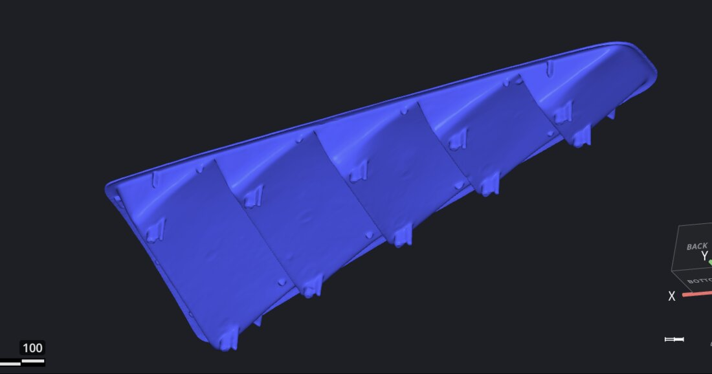
Mustang Vent — Scan & Reprint
Reverse-engineered a fractured Mustang vent assembly to restore it to production geometry. Captured the front and back surfaces via 3D scanning, then registered and stitched both scans into a single watertight mesh in Mesh Inspector, resolving the gaps, overlaps, and surface noise the fracture had introduced. Additively manufactured the corrected geometry on an SLS platform in nylon carbon-fiber, chosen for its rigidity and heat resistance in an automotive vent application.
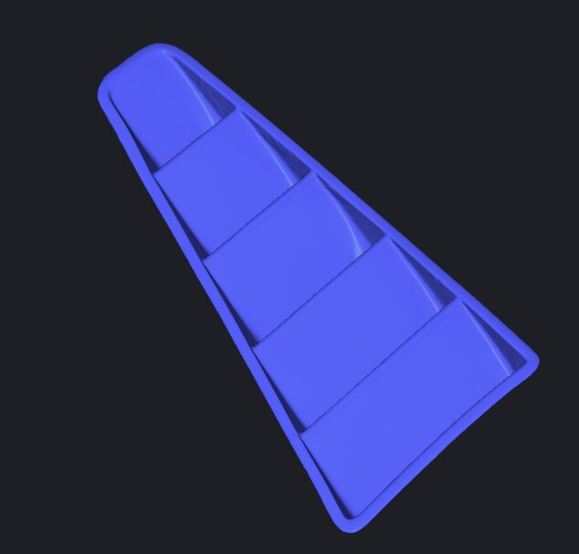
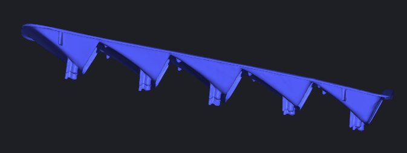
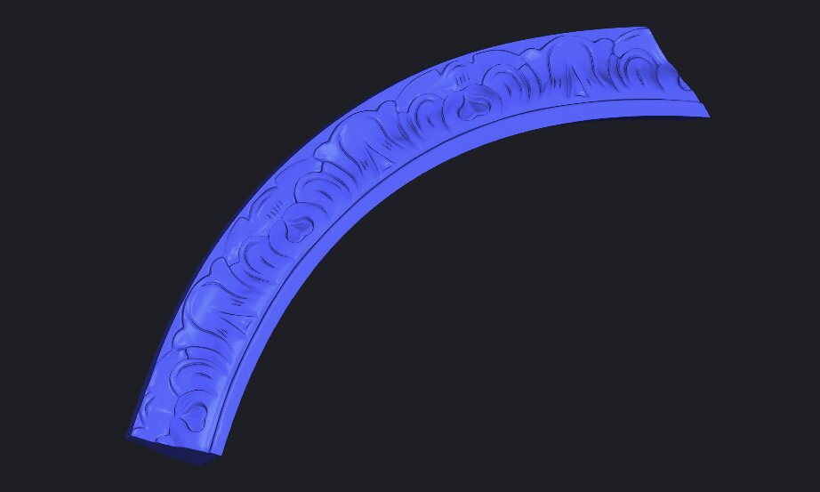
Furniture Piece — CNC Wood Replica
Reverse-engineered a chipped ornamental furniture component to produce a dimensionally accurate wood replacement. Scanned and registered the front and back surfaces of the damaged section, merged the point clouds into a single mesh, and smoothed surface artifacts to recover the original carved profile. Programmed a two-stage CNC toolpath in VCarve — a rough clearing pass followed by a finish pass — and set fixed registration markers to flip the stock and mirror-cut the reverse face, holding tight alignment between both machined surfaces before final cutting on the CNC router.
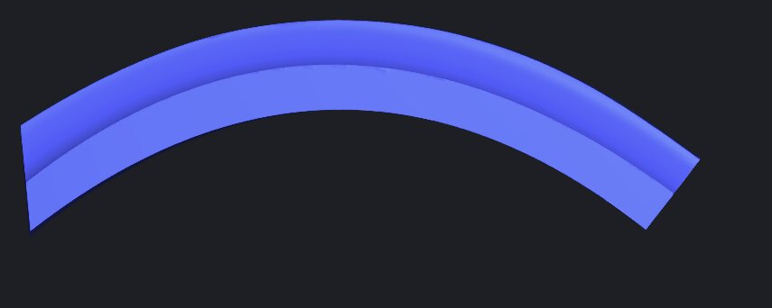
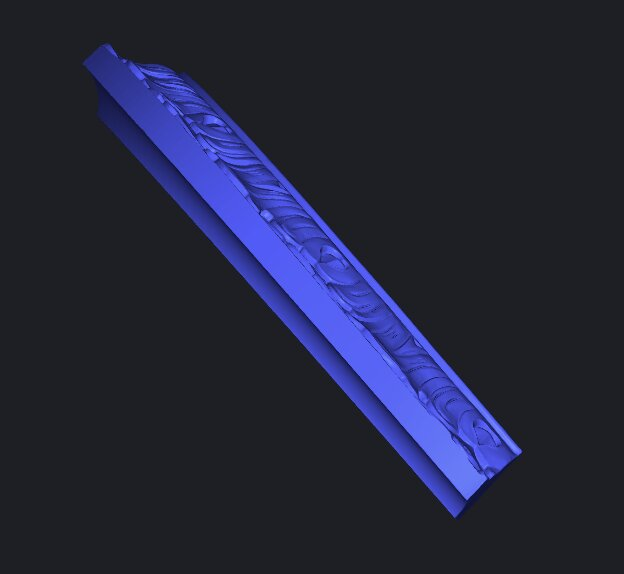
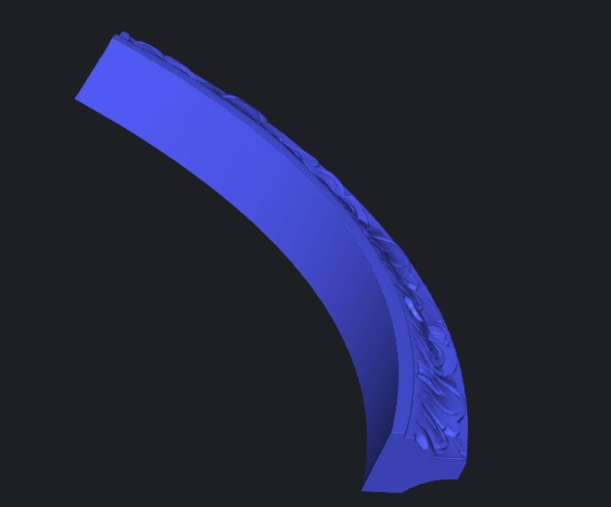
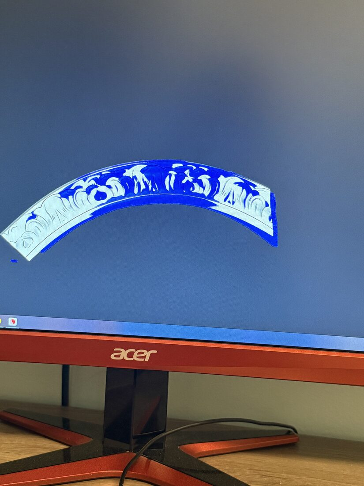
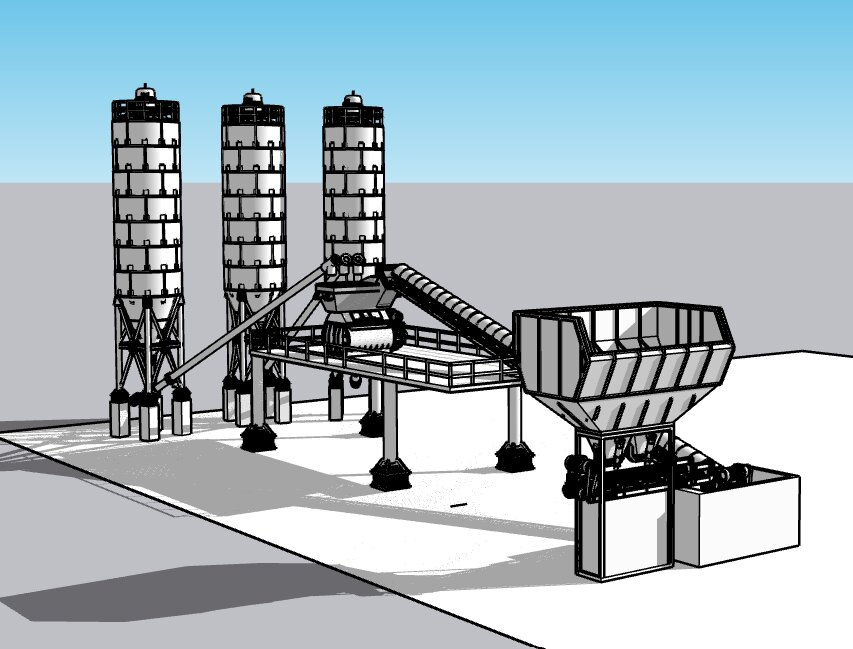
Concrete Batch Plant — Scale Model
Engineered a fully dimensioned assembly model of a concrete batching plant in SketchUp, modeling the powder tanks, mixer unit, inclined and horizontal belt conveyors, and aggregate storage system to real-world-matched tolerances. Validated component fit and overall system geometry, then scaled the assembly for additive manufacturing and produced it as a cohesive physical model on the SLS printer.
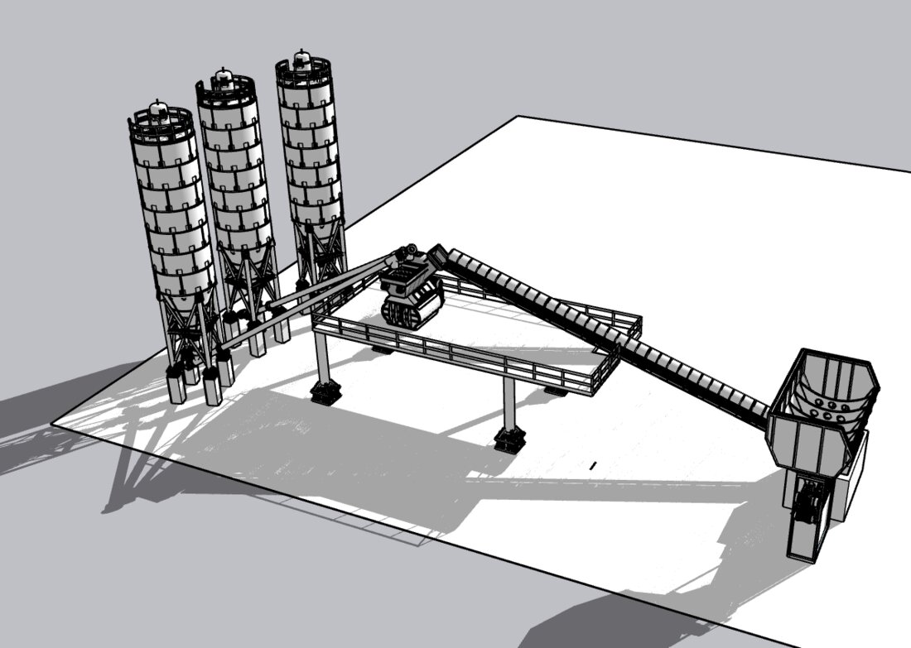
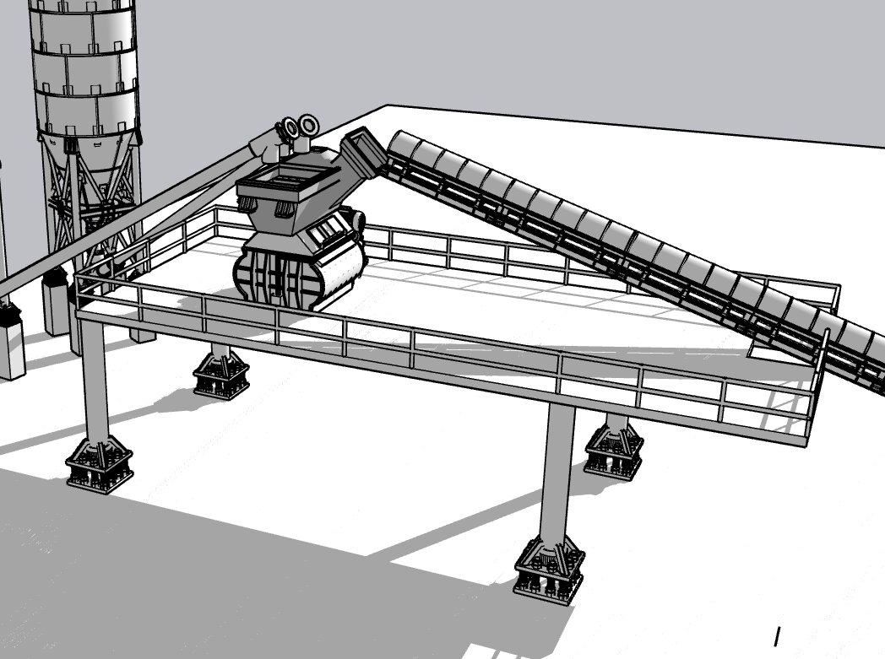
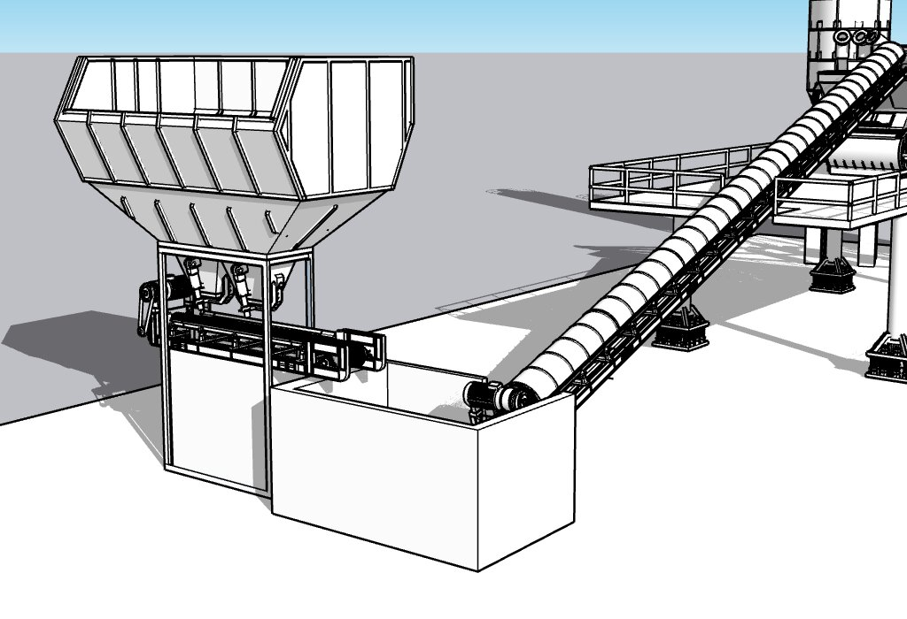
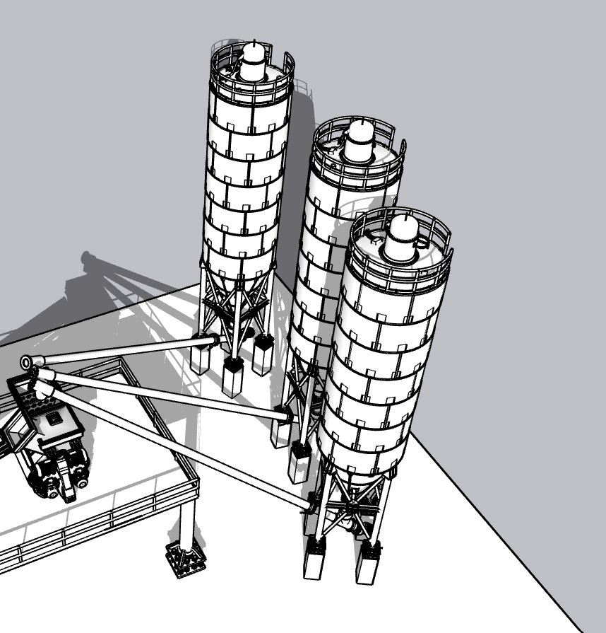
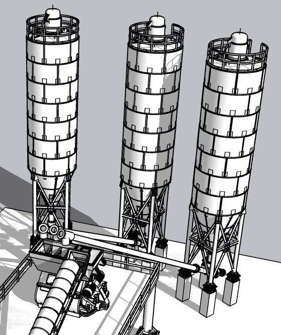
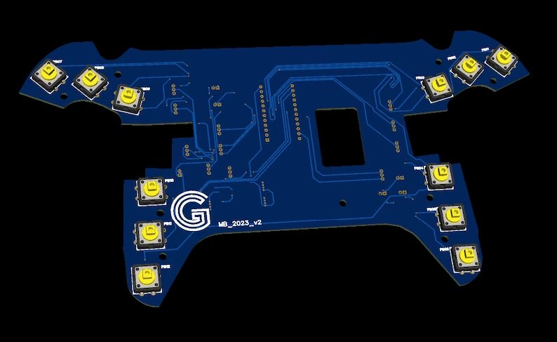
PCB Fabrication — Controller & Train Track
Fabricated custom printed circuit boards through CNC isolation milling, routing precision copper traces directly from the design file, then applied solder mask to protect the pathways and bring each board to a finished, production-style standard. Delivered two functional builds from this process: a custom gaming controller board with routed button and connector pads, and a compact control board for a miniature model-train track system.
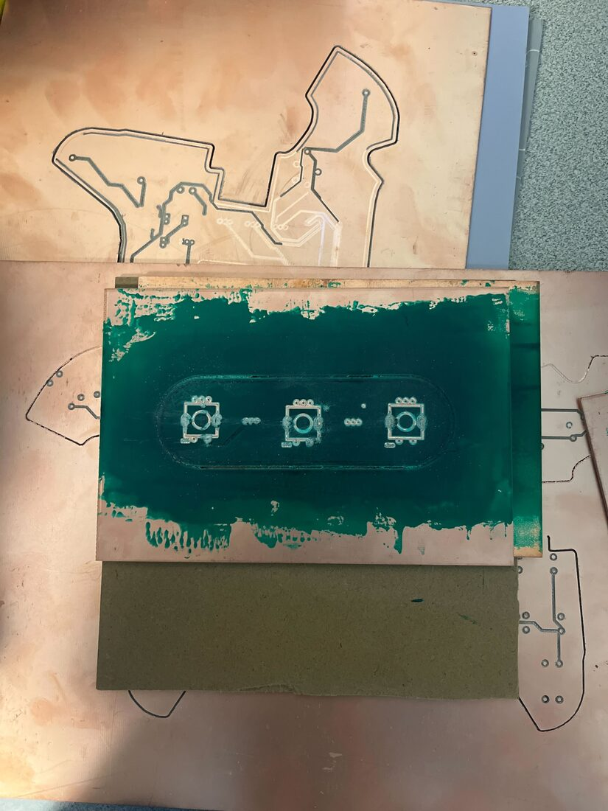
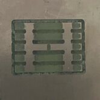
Research
Materials & wearable sensingWearable Textile Triboelectric Glove for Grasp Force & Pressure Sensing
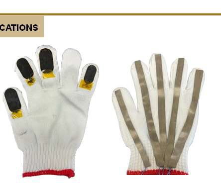
Designing a wearable textile triboelectric glove that senses grasp force and pressure during object interaction, with the Flex Laboratory at Purdue's Edwardson School of Industrial Engineering. The sensing stack layers a laser-induced graphene (LIG) conductive electrode with a vertically aligned zinc-oxide (ZnO) nanorod array on a flexible polyimide substrate, wired through conductive fabric to cut down on signal noise.
ZnO's high-aspect-ratio nanorods increase contact area for stronger triboelectric charge generation and add a piezoelectric response, so the sensor reacts to both contact and mechanical deformation. LIG's porous, laser-patterned graphene structure keeps the electrode conductive through repeated bending — important for something worn on a moving hand.
I built a multi-channel data-acquisition system on an Arduino Nano BLE to digitize and transmit sensor signals over Bluetooth, then ran voltage-spike testing across all five fingers individually. Each finger produced repeatable voltage spikes on contact and pressure, confirming the sensing layers were working as intended.
With Don Perera and Prof. Wenzhuo Wu, Flex Laboratory, Purdue University. Presented as a research poster; applications include robotic hand control, ergonomic monitoring, and digital-twin data collection.
Self-Healing Triboelectric Sensor for UV & Cardiovascular Monitoring
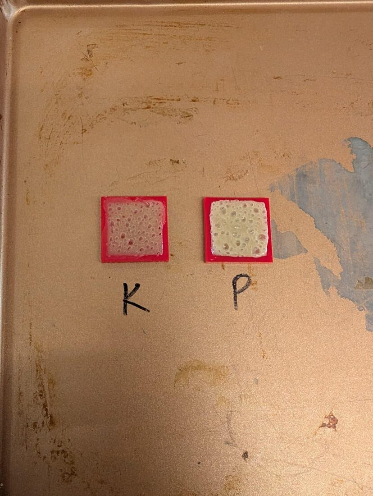
Developing a self-healing, transparent, breathable, and self-adhesive sensor for monitoring UV exposure and cardiovascular signals during outdoor wear. The sensor needs to stay soft and comfortable against skin while holding onto strong electrical and mechanical performance.
The material system combines surface-treated titanium dioxide (TiO₂) nanoparticles — processed to prevent clumping and preserve transparency — with a covalently bonded composite ink built from PBS, epoxy-PDMS, and NH-PDMS. Getting the nanoparticles to disperse evenly and bond cleanly with the surrounding polymer, without trapping air or introducing defects, is the central fabrication challenge.
Materials Selection — ABS-R vs. Nylon Carbon Fiber
Evaluated and compared the printability of ABS-R and Nylon Carbon Fiber through controlled 3D printing tests, assessing surface finish, warping, ease of printing, and structural strength. Combined qualitative observation with quantitative measurement to recommend the optimal material based on print quality and overall usability.
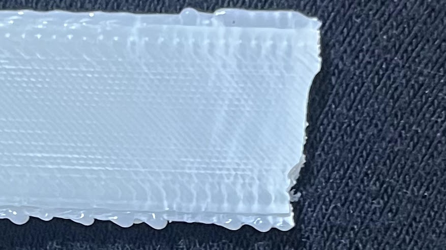
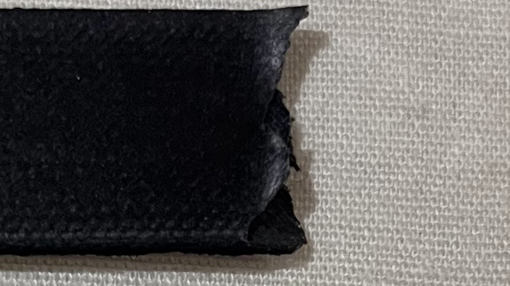
Leadership
Mentorship & roboticsFTC Mentor Training Coordinator
- Developing mentorship training materials and curriculum supporting FLL, FTC, and FRC mentors in technical and leadership development.
- Laying groundwork for a campus-wide mentor training event connecting Purdue students with local FIRST Robotics teams.
- Collaborating with fellow coordinators to embed engineering design and teamwork principles into training modules.
Mechanical Lead
- Worked across SolidWorks, Fusion 360, Onshape, and VCarve, with hands-on experience on CNC mills, 3D printers, laser cutters, and welding equipment.
- Led a 50-person team as Mechanical and Manufacturing Lead across three years of World Championship competition.